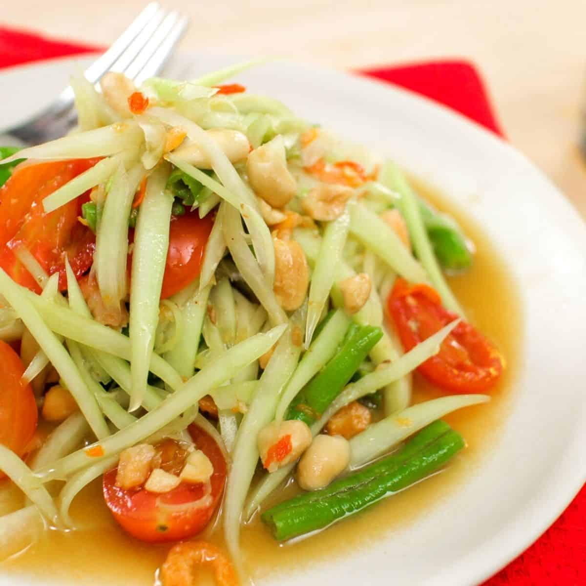

Som Tum

Description
Green papaya salad is a Southeast Asian dish, particularly popular in Thailand, Laos, and Cambodia. It's known for its tangy, spicy, and slightly sweet flavor. The main ingredient is unripe papaya, shredded into thin strips. A dressing made from lime juice, fish sauce, palm sugar, chili peppers, and often garlic or tamarind paste is mixed with the papaya. Other ingredients like tomatoes, carrots, beans, peanuts, dried shrimp, and herbs can also be added. The salad is typically prepared by pounding the ingredients together in a mortar and pestle, which helps to release the flavors. It's often served as a side or appetizer.
Ingredients
- 1 ½ cups julienned green papaya, soak in ice water for 10-15 minutes until they are firme
- 2 cloves garlic
- 3 to 4 chilies
- 1 ½ Tbsp palm sugar, finely chopped, packed
- 2-3 long beans, cut into 2-inch pieces
- 3 Tbsp roasted peanuts (see note)
- 1 heaping tablespoon small dried shrimp
- 3 to 4 calamansi or 2 Tbsp fresh lime juice
- 2 tsp tamarind past
- 1 ½ Tbsp fish sauce
- 3 to 4 ripe tomatoes
Steps
- Drain the soaked papaya well and place in a bowl lined with 2 layers of paper towel to absorb excess water. You want to have as little water on the papaya as possible so as to not dilute the dressing.
- In a large mortar and pestle, pound garlic and chilies until there are no more big chunks (pieces of chili skin are fine).
- Add palm sugar and mash with the pestle until it turns into a wet paste and all the chunks are dissolved.
- Add long beans and pound just until they're broken.
- Add dried shrimp and peanuts and pound to break the peanuts up slightly.
- Add fish sauce, tamarind paste, and lime juice, adding the squeezed lime skin into the mortar as well for extra lime fragrance. Stir with a large spoon to mix and dissolve the sugar.
- dd shredded papaya and tomatoes. Once everything looks well mixed and the tomatoes are just slightly crushed, it's done!
- Plate and sprinkle with the remaining peanuts.